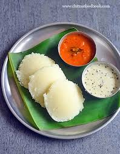

Idli

Description
Idli is a traditional breakfast in South Indian households. These are
soft, fluffy rice cakes made by steaming a fermented batter of rice and
urad dal. Idlis are usually served with chutney and sambar. This dish is
known for its simplicity and nutritional value.
Ingredients
Procedure
- Wash the rice and urad dal separately.
- Soak them in water for at least 6 hours.
- Grind the urad dal to a smooth paste and the rice to a coarse paste.
- Mix both pastes and add salt. Let the batter ferment overnight.
- Pour the batter into idli molds and steam for 10-15 minutes.
- Remove the idlis from the molds and serve hot with chutney and sambar.